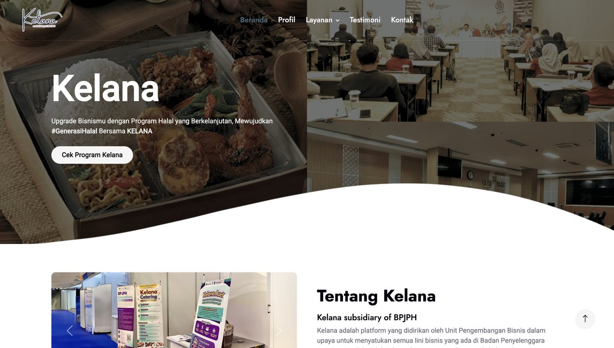
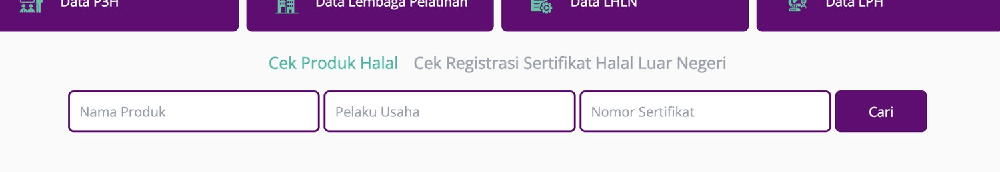
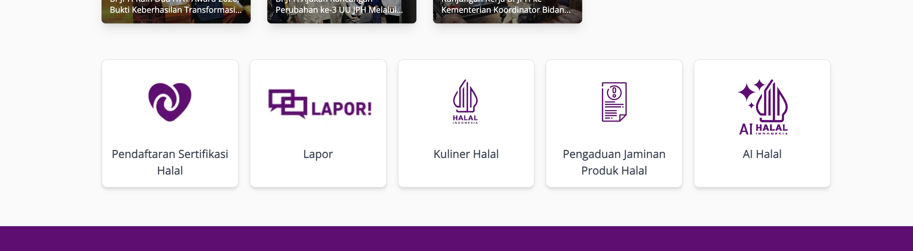

UEQ Whoosh Analysis Platform
Built a web app for collecting User Experience Questionnaire responses, processing six UEQ aspects, and presenting real-time analysis through a responsive dashboard.
- Designed the survey flow and result-reading experience.
- Implemented responsive pages for questionnaire input and analysis output.
- Connected the interface with automated UEQ data processing.
BPJPH internship
Kelana Platform
UI direction for a halal business ecosystem platform, with a focus on service discovery, responsive layout, and cleaner browsing for business support pages.

- Role
- UI design and frontend support
- Focus
- Service structure and responsive visual direction
BPJPH website design
Halal search and service menu
I initiated the design idea for the search area and service cards below it. The code implementation was handled by the team, while my contribution focused on UI concept and layout direction.

